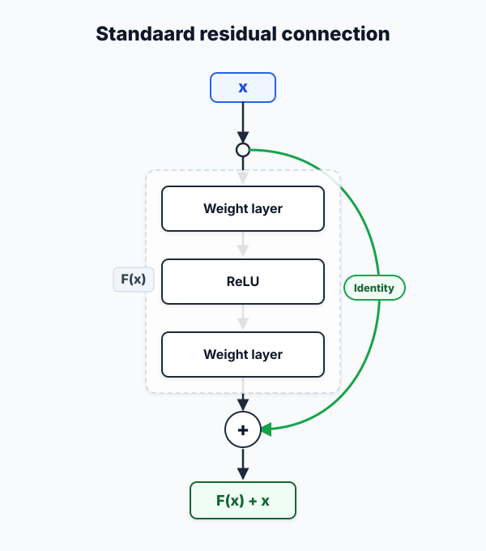
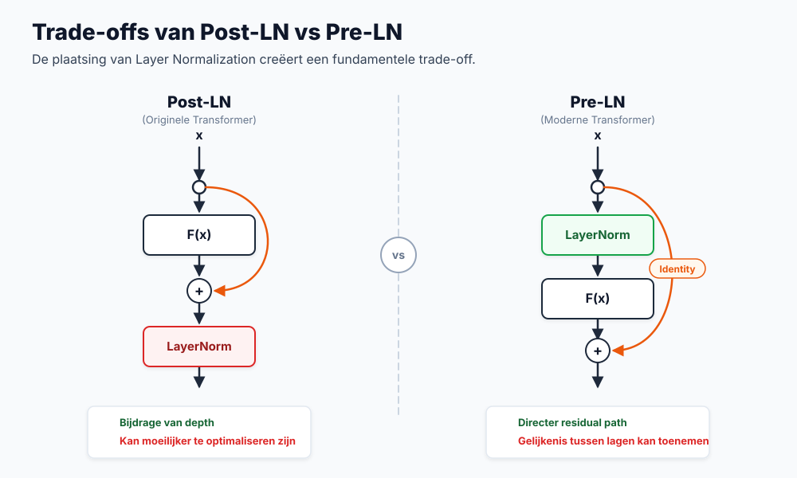
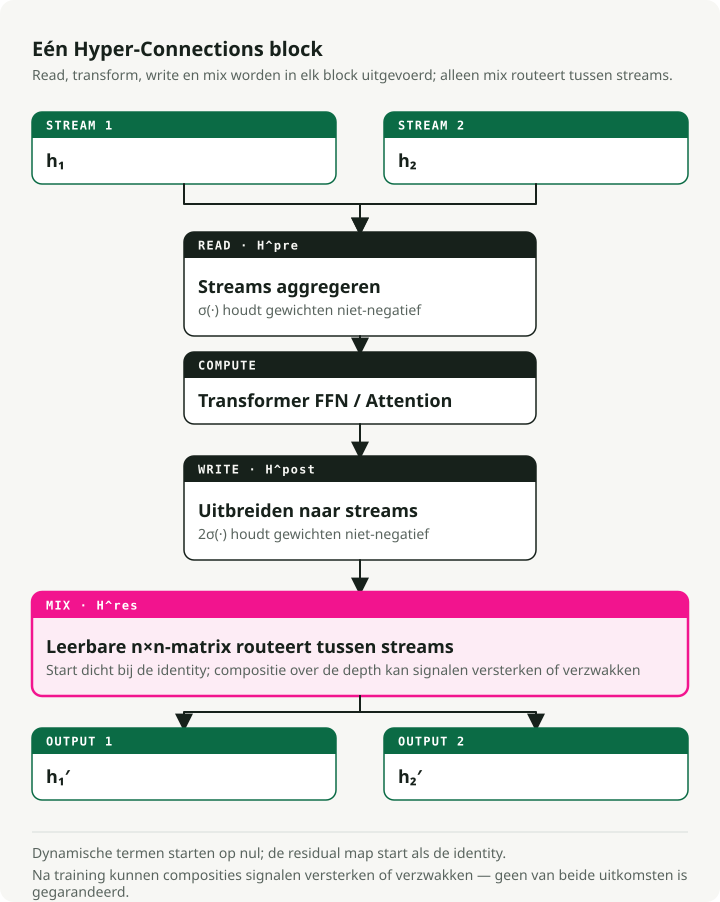
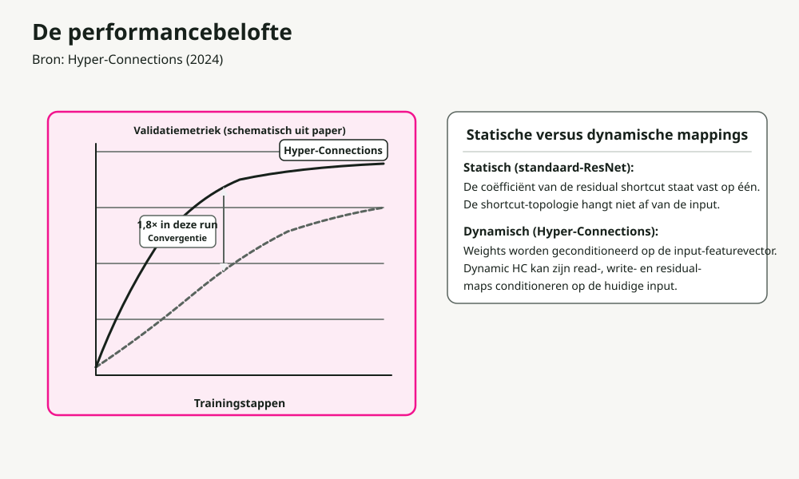
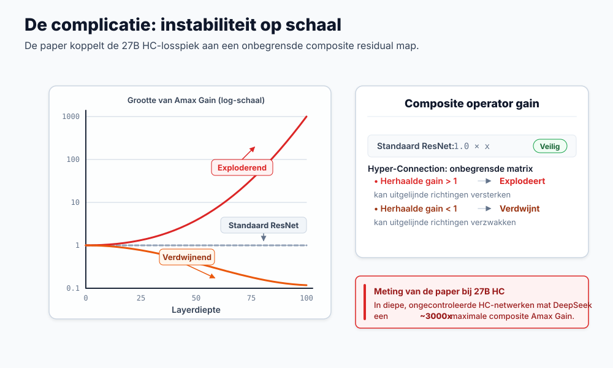
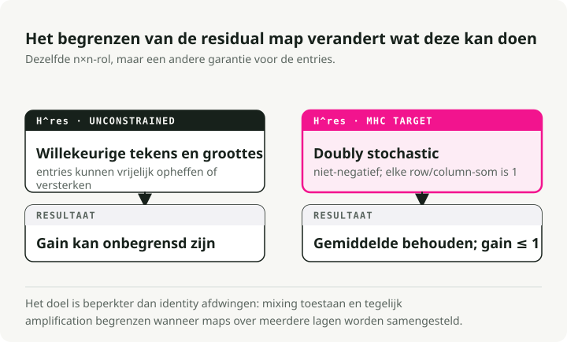
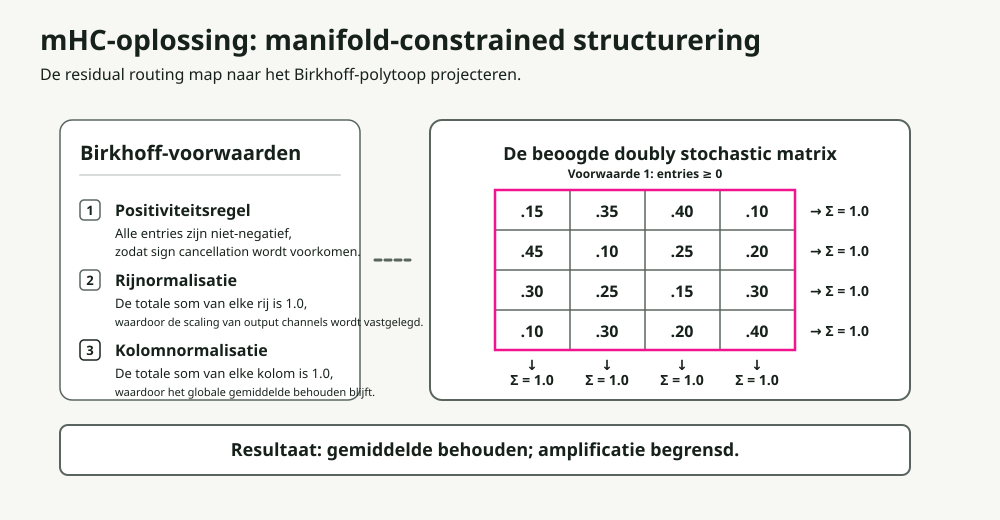
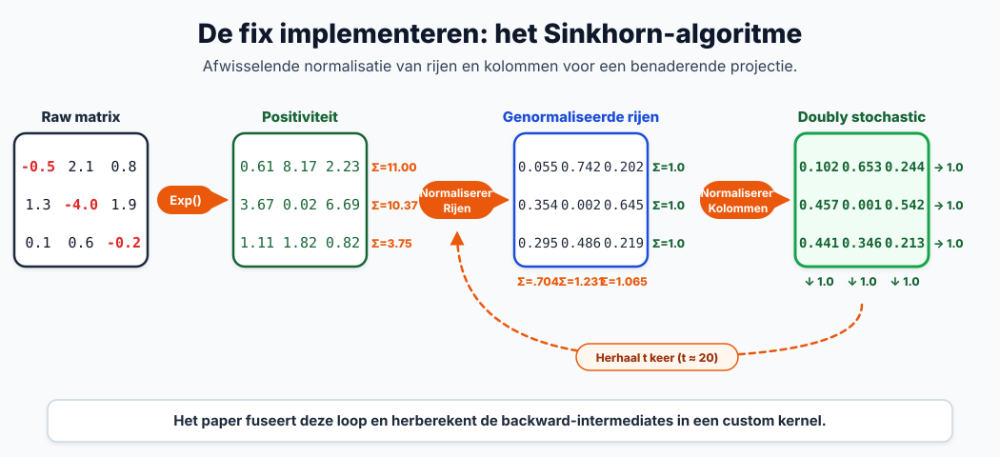
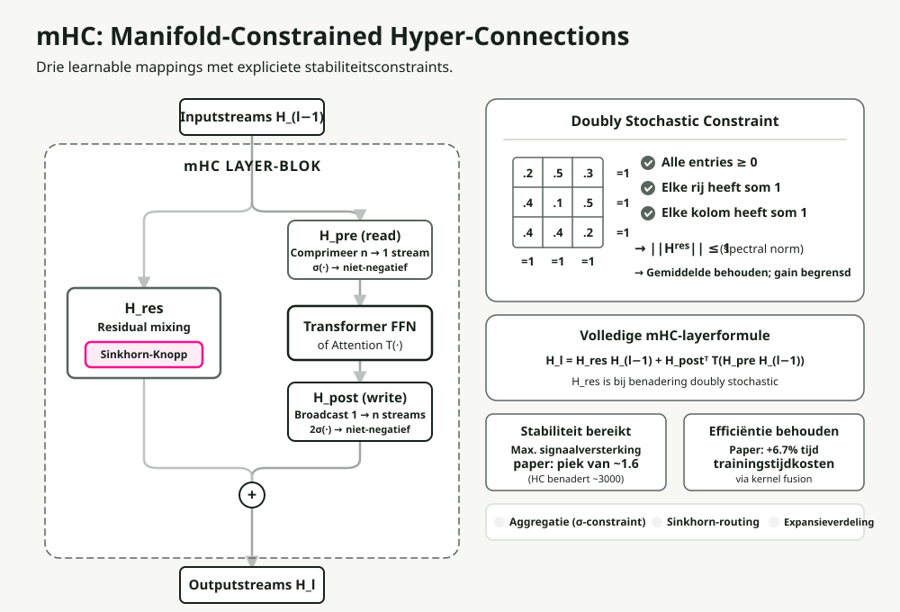

Automatische vertaling
Dit artikel is automatisch vertaald vanuit de oorspronkelijke Engelse versie.
Manifold-Constrained Hyper-Connections (mHC): Uitleg van DeepSeek Residual ScalingManifolds-beperkte hyperverbindingen (mHC)**, lost een langdurig bestaand stabiliteitsprobleem met breedte-schaalverhoudingen op.
In dit artikel ga ik de ontwikkeling bespreken, van eenvoudige residuen tot mHC, waarbij ik uitleg waarom elke stap noodzakelijk was en hoe de oplossing van DeepSeek in werkelijkheid op grote schaal functioneert.
Kort samengevat: Hyper-Connections breiden residuele stromen uit tot meerdere parallelle stromen om een snellere convergentie te bereiken, maar ze verstoren de identiteitsmapping die de stabiliteit van het trainen bewaart. mHC herstelt deze stabiliteit door mengmatrices te beperken tot het Birkhoff Polytope (dubbel stochastische matrices) met behulp van de differentieerbare Sinkhorn-Knopp-algoritme. Het resultaat: 4 parallelle stromen bij slechts 6,7% extra trainingsbelasting.
Waarom residuele verbindingen werken
Voordat we bespreken wat mHC corrigeert, moeten we eerst begrijpen waarop het is gebaseerd.
Het diepteprobleem
Het stapelen van meer lagen zou de capaciteit van een model moeten verhogen. In de praktijk worden zeer diepe netwerken moeilijker te trainen. De capaciteit is er wel, maar de gradientgebaseerde optimalisatie faalt: gradients verdwijnen (krimpen tot bijna nul) of exploderen (groeien oneindig) wanneer ze door meerdere lagen gaan.
De residuele oplossing
The ResNet-paper er werd een elegante oplossing geïntroduceerd. In plaats van een directe afbeelding te leren, wordt de residu geleerd, oftewel het verschil ten opzichte van de identiteitfunctie:

Het trucje zit in de identiteitsshortcut. Wanneer de residuele functie F(x) nul oplevert, werkt de laag als een perfecte doorlaatlaag. Hieruit volgen twee gevolgen:
- Gradientenweg: Gradienten stromen rechtstreeks door de shortcut heen, waardoor verdwijningseffecten worden vermeden.
- Eenvoudige optimalisatie: Als de identiteit optimaal is, leert het netwerk eenvoudigweg F(x) → 0.
Dit ene architectuurverandering maakte het mogelijk om netwerken met honderden lagen te trainen.
De complicatie bij Transformers: de plaatsing van layer normalization
Transformers brachten een nieuwe variabele met zich mee: waar Layer Normalization (LN) moet worden geplaatst. De beslissing lijkt onbeduidend, maar is dat niet.

| Variant | Plaatsing van LN’s | Voordelen | Belangrijkste beperking |
|---|---|---|---|
| Post-LN | Na de residuele blokken | Hoge modelcapaciteit | Gradientverdwijning: LN in het hoofdpad schaalde de gradients per laag opnieuw in |
| Pre-LN | Voor de residuele blokken | Uitstekende stabiliteit | Representatieruimtekolaps: kenmerken worden over de lagen heen vergelijkbaar |
The ResiDual De architectuur probeerde dit op te lossen met twee residuele paden: één Pre-LN voor stabiliteit en één Post-LN voor capaciteit. Er is echter nog steeds maar één residueel stroompje. Wat als je meerdere parallele stroompjes zou kunnen hebben?
Hyper-Connections: De revolutie in breedte
Hyper-Connecties (HC) Er werd een andere route genomen. Voeg niet alleen diepte toe, maar vergroot ook de breedte van de residuele stroom.

Wat is een “Stream”?
Bij standaard transformers vormen de invoer-tokenembeddings één enkele \(d\)-dimensionale vector die de kenmerken van het token weergeeft. Deze enkele vectorreeks vormt de “residuale stream” die door elk blok stroomt.
Bij Hyper-Connections is een stream een van de \(n\) parallele instantiaties van deze toestand.
Hoe verkrijgen we ze? Aan het begin van het netwerk wordt de oorspronkelijke invoerembedding \(n\) keer gerepliceerd (waarbij \(n\) de “expansieratio” is, meestal 4). De standaard \(d\)-dimensionale verborgen toestand wordt dan een \(n \times d\) “hyperverborgen matrix”.
Deze \(n\) identieke streams stromen door de transformerlagen van het netwerk, waar ze op verschillende manieren worden geaggregeerd, gerouteerd en uitgebreid door de hieronder beschreven mechanismen. Hierdoor gaan ze onmiddellijk uiteen en vormen ze aparte representatieroutes.
Kernmechanismen
In plaats van één residuele route houdt HC \(n\) parallele streams in stand die door het hele netwerk stromen. In elk transformerblok worden drie operaties uitgevoerd, elk geregeld door kleine, leerbare gewichten:
- Aggregatie (\(H_{pre}\), voor-mapping): De \(n\) binnenkomende stromen worden gecomprimeerd tot één enkele vector voor de transformer-blok, waarbij gebruik wordt gemaakt van een leerbare matrix \(H_{pre}\). Elke stroom wordt vermenigvuldigd met een leerbaar belangheidsgewicht, waardoor dit fungeert als een invoerfilter.
- Expansie (\(H_{post}\), na-mapping): Na de kern transformer-blok (Attention of MLP) wordt de uitvoer via een leerbare matrix \(H_{post}\) verspreid over \(n\) afzonderlijke stromen. Dit dient als een uitvoergate, waarbij elke stroom wordt geschaald met een uniek leerbaar gewicht.
- Menging (routing tussen stromen): De nieuw geexpandeerde stromen worden gecombineerd met de oorspronkelijke residuele stromen. Een leerbare “feature-router”-matrix van formaat \(n \times n\) (\(\mathbf{H}^{res}\)) bepaalt hoe informatie uit elke stroom naar de andere stromen stroomt, waardoor kenmerken op elkaar worden overgedragen vóór de volgende laag.
De mengingsmatrix H fungeert als verkeersregelaar: zij stuurt kenmerken tussen de stromen op basis van geleerde patronen. Hierdoor stroomt de informatie veel rijkker dan wanneer deze alleen via één residueel pad zou gaan.
De resultaten

HC convergeert ongeveer 1,8× sneller dan standaard residuen. De parallele stromen bieden de gradienten meer paden en stellen het netwerk in staat om meer gevarieerde representaties vast te houden.
Het nadeel
Er is een kritisch probleem: HC is op grote schaal instabiel.
Waarom hyper-connecties falen
De flexibiliteit die HC mogelijk maakt, is ook wat het doet falen. Het vernietigt de identiteitsmapping die ervoor zorgt dat residuen in de eerste plaats getraineerd kunnen worden.

De wiskunde achter instabiliteit
Bij standaardresiduen:
Wanneer \(F(x) \rightarrow 0\), is dit een identiteit: \(x_{l+1} = x_l\). Het signaal gaat onveranderd door.
Bij Hyper-Connections bevat het residuele pad een matrixvermenigvuldiging:
Na L lagen wordt het signaal als volgt:
Als de waarden in H zelfs maar enigszins afwijken van 1,0, leidt deze productie tot:
- Een explosie: waarden > 1,0 vermenigvuldigen zich exponentieel.
- Een verdwijning: waarden < 1,0 nemen exponentieel af.
Het DeepSeek-team meette dit met “Amax Gain Magnitude”, een maatstaf die de maximale verhouding tussen de amplitude van het uitgangssignaal en dat van het invoersignaal over alle lagen bijhoudt. In standaard HC bereikt deze waarde ~3000 in diepe netwerken. Op dat punt is training niet langer haalbaar.

Het kernprobleem: onbeperkte matrices kunnen elke waarde aannemen (negatieve getallen, hoge groottes, alles). We hebben een manier nodig om ze binnen de “goed gedragende” set te houden, zodat ze de signaalenergie op dezelfde manier behouden als de identiteitsmatrix.

De drie beperkingen
De mHC beperkt de mengmatrix H^res tot een tweevoudig stochastische matrix: alle elementen zijn niet-negatief, en de som van elke rij en kolom is precies 1. Dit zorgt er tegelijkertijd voor dat drie eigenschappen worden nageleefd:
| Beperking | Regel | Waarom dit belangrijk is |
|---|---|---|
| Positiviteit | Alle elementen > 0 | Verhindert de oscillerende signaalwaarde die gradienten onstabiel maakt. |
| Totaal rijwaarde = 1 | Elke rij somt op 1,0. | Normaliseert de bijdrage van de uitvoer; er is geen enkele stroom die de overhand heeft. |
| Som van kolom = 1 | Elke kolom heeft een som van 1,0. | Normaliseert de invoerverdeling; alle stromen dragen evenredig bij |
Het cruciale resultaat: Energie In = Energie Uit. De signaalsterkte blijft behouden tot diep in het netwerk, waardoor het probleem van een exponentiële explosie wordt voorkomen.
Deze beperking heeft ook nuttige wiskundige gevolgen:
- Spectrale norm ≤ 1: De spectrale norm (de grootste singulairwaarde) beperkt de signaalversterking. Dubbel stochastische matrices zijn wiskundig niet-expanderend.
- Gesloten onder vermenigvuldiging: Het combineren van dubbel stochastische matrices levert opnieuw een dubbel stochastische matrix op.
- Gewogen gemiddelde: De operatie wordt een convexe combinatie (een gewogen gemiddelde waarbij de gewichten samen 1 bedragen) van de invoerwaarden, waardoor de totale signaalsterkte behouden blijft.
De Sinkhorn-Knopp-algoritme
De uitdaging: hoe forceer je een leerbare matrix ertoe om dubbel stochastisch te worden, terwijl je ervoor zorgt dat deze nog steeds differentieerbaar blijft? De Sinkhorn-Knopp-algoritme lost dit op. Het is een iteratieve projectie die na slechts enkele stappen convergeert naar een dubbel stochastische vorm.

Uitgebreide uitleg met een concreet voorbeeld:
Stap 1: Positiviteit. Pas exp() toe op de ruwe gewichten zodat alle elementen strikt positief zijn:
Raw Matrix → Positive Matrix
[-0.5 2.1 0.8] [0.6 7.9 2.2] Σ=10.7
[ 1.3 -4.0 1.9] exp [3.7 0.02 6.7] Σ=10.4
[ 0.1 0.6 -0.2] → [1.1 1.8 0.8] Σ=3.7
Stap 2: Normalisatie van rijen. Deel elke rij door de som van diens elementen:
Positive Matrix → Row Normalized
[0.6 7.9 2.2] [0.25 0.65 0.10] Σ=1.0
[3.7 0.02 6.7] /row [0.35 0.01 0.64] Σ=1.0
[1.1 1.8 0.8] → [0.30 0.45 0.25] Σ=1.0
Σ=0.9 Σ=1.1 Σ=0.99 ← columns not yet =1
Stap 3: Normalisatie van kolommen. Deel elke kolom door de som van de waarden daarin:
Row Normalized → Doubly Stochastic
[0.25 0.65 0.10] [0.28 0.45 0.27] Σ=1.0
[0.35 0.01 0.64] /col [0.40 0.09 0.51] Σ=1.0
[0.30 0.45 0.25] → [0.32 0.46 0.22] Σ=1.0
Σ=1.0 Σ=1.0 Σ=1.0 ← converges in few iterations
Stap 4: Itereren. Herhaal stappen 2-3 voor t_max iteraties (meestal 20) totdat convergentie is bereikt.
Het hele proces is differentieerbaar, zodat gradienten tijdens het trainen kunnen stromen. Sinkhorn-Knopp is bovendien goedkoop en veroorzaakt minimale extra belasting voor de trainingscyclus.
Initialisatie is eveneens belangrijk.
Verfijningen van initialisatie
Om een stabiele start van het trainen te bewerkstelligen:
- Sigmoid in plaats van Tanh: De coëfficiënten blijven niet-negatief en begrensd (tussen 0 en 1).
- Vermenigvuldiger met 2: Sigmoid-outputten liggen bij initialisatie rond 0,5. Door dit met 2 te vermenigvuldigen, krijg je een begingewicht van ongeveer 1,0, wat overeenkomt met identiek gedrag.
Volledige mHC-architectuur
Samen gezien:

De stroom door elk blok:
- Invoer: \(n\) parallele residuele stromen komen de laag binnen.
- Aggregatie (\(H_{pre}\)): De \(n\) stromen worden via een gewogen som, met behulp van de matrix \(H_{pre}\), gecombineerd tot één vector. In mHC zijn deze aggregatiegewichten lokaal beperkt (\(\sigma(\cdot)\)) tot niet-negatieve waarden, waardoor onnatuurlijke schaling en destructieve interferentie worden voorkomen.
- Berekening: De standaard Transformer-blok (Attention of MLP) verwerkt de enkele geaggregeerde vector.
- Uitbreiding (\(H_{post}\)): De enkele uitvoer van het blok wordt verspreid en geschaald naar \(n\) afzonderlijke update-stromen met behulp van de matrix \(H_{post}\), die eveneens beperkt moet blijven tot niet-negatieve waarden.
- Menging (\(H_{res}\) routing): De stromen delen informatie via een \(n \times n\) mengmatrix \(\mathbf{H}^{res}\). In mHC is deze matrix strikt beperkt tot het Birkhoff-polytoop (dubbel stochastisch), zodat de signaalenergie behouden blijft.
- Uitvoer: De bijgewerkte \(n\) stromen gaan door naar de volgende laag, zonder te exploderen of te verdwijnen.
Het belangrijkste verschil ten opzichte van standaard HC is dat elke meng- en aggregatieoperatie gaat via een Sinkhorn-beperking of een soortgelijke normalisatie. Dit zorgt ervoor dat het signaal stabiel blijft over honderden lagen.
Infrastructuur: Het praktisch maken
Het uitbreiden naar n=4 stromen levert aanzienlijke overhead op. Elke stroom heeft zijn eigen geheugen, en Sinkhorn vereist 20 iteraties per laag. Het DeepSeek-team heeft dit opgelost met verschillende optimalisaties.
Kernelfusie
Het gebruiken van TileLang, ze voegden Sinkhorn-iteraties samen met multiplikaties in gemengde precisie toe aan gespecialiseerde CUDA-kernen. Dit vermindert de aantal keer dat er gecommuniceerd moet worden met geheugen met hoge bandbreedte (HBM), wat doorgaans de echte bottleneck is op moderne hardware.
Selectieve herberekening
Het opslaan van elke tussentijdse Sinkhorn-toestand voor backpropagatie zou het geheugen enorm doen opzwellen. In plaats daarvan doet mHC het volgende:
- Het bevrijdt de tussentijdse activaties na de forward-pass.
- Het herberekent deze activaties ter plekke tijdens de backward-pass.
Een aangepaste versie van DualPipe De planning overlapt deze herberekening met de communicatie van gradients, waardoor de kosten van herberekenen grotendeels verborgen blijven.
Resultaten
Met deze optimalisaties leidt een uitbreidingsgraad van n=4 tot slechts 6,7% trainingsoverhead ten opzichte van de basisversie. Complex topologisch routeren is op grote schaal haalbaar.
Empirische validatie
Leiden de theoretische garanties daadwerkelijk tot echte verbeteringen?
De ruwe trainingsdynamiek is scherp. Zonder beperkingen stijgt de signaalmagnitude (Amax Gain) bij diepe netwerken die standaard Hyper-Connections gebruiken aanzienlijk tot ongeveer 3.000, wat leidt tot grote instabiliteit en frequente pieken in de verlieswaarden. Door de dubbel stochastische beperking toe te passen, houdt mHC de Amax Gain gedurende het hele trainingsproces rond de 1,6.
Maar stabiliteit doet er niet toe als de prestaties van het model verslechteren. Om de representatieve capaciteit te testen, beoordeelde het team een mHC-27B-model (gebouwd op de DeepSeek-V3-architectuur) tegen zowel standaard ResNet- als onbeperkte HC-baselines. Op redeneringsbenchmarks zoals GSM8K en MATH wint mHC consequent. De prestatieverbeteringen door parallelle streamrouting zijn echt, en met Sinkhorn-beperkingen kun je eindelijk deze zeer brede residuele paden trainen zonder dat de training uit elkaar valt.
Afwegingen en overwegingen
mHC is geen gratis maaltijd. Drie punten die het waard zijn om te benadrukken:
- Rekenkundige overhead: 6,7% is weinig voor wat het oplevert, maar het blijft een extra kostenpost vergeleken met standaard residuals.
- Implementatiecomplexiteit: Je kunt dit niet zomaar in gewone PyTorch schrijven en verwachten dat het snel is. De lage overhead vereist aangepaste, nauwkeurig getuneerde CUDA-kernen.
- Sterke inductieve bias: De dubbel stochastische beperking dwingt tot strikte signaalconservatie. Als je taak echt signaalversterking dieper in het netwerk nodig heeft, werkt deze beperking juist tegen je.
Belangrijkste conclusies
- Residuele verbindingen werken dankzij identity mapping: de mogelijkheid om signalen onveranderd door te laten gaan.
- Hyper-Connections schalen de breedte in plaats van de diepte, waardoor snellere convergentie wordt bereikt door middel van meervoudige stroomrouting.
- De flexibiliteit van HC vernietigt identity mapping, wat leidt tot een signaalexplosie in diepe netwerken.
- mHC beperkt de mengmatrices tot het Birkhoff Polytope, waardoor stabiliteit wiskundig wordt gegarandeerd.
- Sinkhorn-Knopp maakt de beperking differentieerbaar, zodat end-to-end training mogelijk is.
- Infrastructuurwerk (kernelfusie, selectieve herberekening) is wat het geheel praktisch maakt.
Voor praktijkspecialisten: als u tegen grenzen aanloopt bij het schalen van de diepte en toegang heeft tot de ontwikkeling van aangepaste kernels, is mHC een principieel goede manier om capaciteit via de breedte te vergroten zonder de training instabiel te maken.
Referenties
- mHC: Hyperverbindingen onder beperking door manifoldstructuren - Xie et al. (DeepSeek) Deep Residuale Leren voor Afbeeldingsherkenning - He et al. (ResNet) Hyperverbindingen - Oorspronkelijk HC-artikel TileLang - Framework voor optimalisatie van CUDA-kernen DualPipe - Scheduler voor pipelineparalleliteit voor DeepSeek-V3 ResiDual - Architectuur met dubbele residuele paden